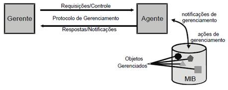
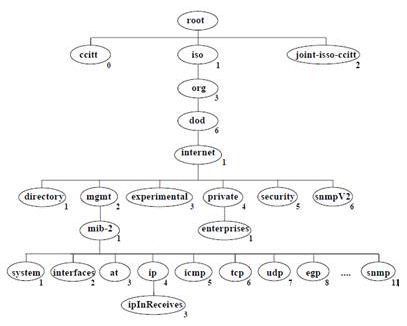

Gerenciamento e Monitoramento de Rede
O gerenciamento está associado ao controle das atividades e ao monitoramento do uso dos recursos no ambiente
da rede. As tarefas básicas desta gerência, resumidamente, são: obter as informações da rede, tratá-las para
diagnosticar possíveis problemas e encaminhar as soluções destes problemas.
Para cumprir estes objetivos, funções de gerência devem ser embutidas nos diversos componentes da rede,
possibilitando detectar, prever e reagir aos problemas que por ventura possam ocorrer.
Um sistema de gerenciamento é composto de uma coleção de ferramentas para monitorar e controlar a rede,
integradas da seguinte forma:
• Uma única interface de operador, com um poderoso e amigável conjunto de comandos, para executar as tarefas
de gerenciamento da rede;
• Uma quantidade mínima de equipamentos separados, isto é, que a maioria do hardware e software necessário para
o gerenciamento da rede seja incorporado nos equipamentos de usuários existentes.
O software usado para realizar as tarefas de gerenciamento, reside nos computadores hospedeiros (estações de
trabalho) e nos processadores de comunicação (switches, roteadores).
Um software de gerenciamento genérico é composto por elementos gerenciados, agentes, gerentes, bancos de dados,
protocolos para troca de informações de gerenciamento, interfaces para programas aplicativos e interfaces com
o usuário.
A arquitetura do software de gerenciamento residente no gerente e nos agentes, varia de acordo com a
funcionalidade da plataforma adotada. Genericamente, o software pode ser dividido em software de apresentação
(interface), de gerenciamento (aplicação) e de suporte (base de dados e comunicação).
Em cada rede gerenciada, deverá haver pelo menos uma estação que atuará como gerente, sendo responsável pelo
monitoramento e controle dos dispositivos gerenciáveis, denominados de agentes. O agente é um software existente
nos dispositivos gerenciáveis (switches, roteadores, estações de trabalho) da rede e tem como tarefa o
monitoramento e o controle dos dispositivos do ambiente em que estão instalados.
Os gerentes realizam requisições aos agentes que respondem às requisições com as informações solicitadas. Gerentes
e agentes atuam mutuamente na rede.
Quanto à distribuição dos gerentes dentro do ambiente a ser gerenciado, classifica-se em: gerência centralizada
- onde todo o controle do gerenciamento é realizado por uma única estação e indicada para redes que ocupam
uma área geográfica não muito extensa (LANs) - e a gerência distribuída – onde o controle do gerenciamento
é realizado por diversas estações espalhadas pela rede e mais indicada para WANs.
Na gerência centralizada, uma única estação (gerente), é responsável por todo o controle do gerenciamento,
enviando requisições aos dispositivos gerenciáveis da rede (agentes), que responderão a estas solicitações,
gerando um tráfego extra de gerência nos diversos enlaces desta rede.
Na gerência distribuída, todo o controle é feito de forma descentralizada, em cada domínio de gerência, que
são regiões de rede bem definidas, controladas por um gerente. O gerente de cada domínio é responsável pelas
informações e decisões dentro do seu domínio e, aquelas que são pertinentes ao ambiente global da rede, são
repassadas para o gerente dos gerentes, seguindo uma hierarquia entre estes vários domínios.
Com a evolução das redes de computadores, e consequentemente o aumento de sua importância para as corporações,
fez-se necessário definir critérios que possibilitassem gerenciar de maneira eficiente estas redes. Devido
a grande diversidade de equipamentos e protocolos, fortemente dependentes de seus fabricantes e
desenvolvedores, uma variedade de frameworks de gerência se tornava necessário, ficando cada vez mais evidente
a necessidade de se estabelecer padrões de gerência que permitissem uma maior interoperabilidade entre um
maior número de dispositivos.
Estes padrões de gerência começaram a amadurecer e, dentre os mais difundidos, destacam-se o CMISE/CMIP
(Commom Management Information Service Element / Commom Management Information Protocol), o RMON (Remote
Monitoring), o SNMP e o TMN (Telecommunications Management Network).
Apesar dos vários padrões de gerência existentes, a técnica de sniffing também se tornou bastante útil nas
atividades de gerência. Com o uso de sniffers (ou probes) no monitoramento de redes, as faltas que alguns dos
padrões apresentam quando se trata da obtenção de informações ligadas às camadas mais altas do modelo OSI
foram supridas.
O sniffer é um programa residente numa máquina conectada a um segmento de rede que “escuta” todo o tráfego
que flui neste segmento. Possuem ferramentas conhecidas como analisadores de protocolos, que os habilitam a
capturar e interpretar as informações sobre aquilo que trafega em cada segmento de rede.
A necessidade de uma arquitetura de gerenciamento capaz de atender à enorme diversidade de elementos gerenciáveis
existentes em uma rede e que tivesse características de integração, simplicidade, segurança e flexibilidade fez
com que a ISO apresentasse um esquema básico de arquitetura de gerenciamento de rede OSI, complementando o
modelo de referência OSI.
Assim foi idealizada uma arquitetura genérica de gerência de redes, constituída de seis entidades principais:
objeto gerenciável, processo gerente, processo agente, base de informações, primitivas e protocolos de gerência.

Qualquer dispositivo de rede que tenha a capacidade de computar, armazenar e disponibilizar informações
relevantes à gerência de rede é denominado dispositivo gerenciável.
O processo gerente, que normalmente é realizado por um software presente numa determinada estação, denominada
estação gerente, possibilita a obtenção e o envio de informações de gerenciamento junto aos dispositivos
gerenciados. Um único processo gerente pode controlar vários processos agentes, que por sua vez o podem
fazer, cada um, diversos objetos gerenciáveis em um ou mais dispositivos gerenciáveis.
As informações de gerenciamento podem ser obtidas através de requisições disparadas pelo gerente ao agente ou
mediante envio automático pelo agente a um determinado gerente.
O processo agente inclui um software presente nos dispositivos gerenciados. Suas funções principais são o
atendimento das requisições e o envio automático de informações de gerenciamento ao processo gerente, indicando
a ocorrência de um evento previamente programado.
A SMI (Structure Management Information) proposta pela ISO define a estrutura da informação de gerenciamento
a ser armazenada em uma base de dados, as operações que podem ser efetuadas sobre estas informações e as
notificações que podem ser emitidas em decorrência destas operações. Na definição desta estrutura, a ISO
utilizou uma abordagem orientada a objetos, caracterizando os recursos do sistema como objetos gerenciados
definidos através de seus atributos, das operações a que podem ser submetidos e das notificações que podem
ser emitidas.
O conjunto de objetos gerenciados com seus respectivos dados dentro de um sistema aberto define a base de
informações de gerenciamento, denominada MIB.
Na definição destes objetos gerenciáveis é utilizada a linguagem ASN.1 (Abstract Syntax Notation One), que
possibilita definir a estrutura destes dados sem a necessidade de se considerar a estrutura nem as restrições
do dispositivo de rede no qual será implementada.
Os dados dos objetos e seu padrão de organização devem ser amplamente conhecidos por agentes e gerentes, para
permitir a troca de informações entre eles. O estabelecimento de um padrão para a MIB garante a proteção
contra erros de interpretação ou falta de compatibilidade entre os dados trocados.
O processo gerente deve conhecer toda MIB de sua rede para poder controlar e interagir com todos os agentes
presentes. Um processo agente, por sua vez, pode se limitar a conhecer apenas a uma fração da MIB que comporte
os objetos gerenciáveis que ele controla.
Os objetos gerenciáveis de uma MIB se relacionam através de uma estrutura hierárquica em árvore, vista a seguir.

O nome de um objeto, nesta hierarquia, será dado pela sequência de rótulos numéricos dos nós, ao longo de
um caminho, da raiz até este objeto. Por exemplo, o nome 1.3.6.1.2.1.4.3 identifica o objeto ipInReceives,
que no modo textual é identificado por iso.org.dod.internet.mgmt.mib.ip.ipInReceives.
Basicamente, são definidos quatro tipos de MIBs: MIB I (RFC 1066), MIB II (RFC 1213), MIB experimental (RFC
1239) e MIB privada.
As MIBs do tipo I e II fornecem informações gerais de gerenciamento sobre um determinado equipamento, sem
levar em conta as características específicas deste equipamento, sendo a MIB II considerada uma evolução
da MIB I.
Através destas MIBs é possível obter informações como: tipo e status de uma interface, número de pacotes
transmitidos, número de pacotes com erros, protocolo de transmissões, entre outras.
As MIBs experimentais são aquelas que estão em fase de testes, com a perspectiva de serem adicionadas ao
padrão e que, em geral, fornecem características mais específicas sobre a tecnologia dos meios de transmissão
e equipamentos.
As privadas, também denominadas MIBs proprietárias, fornecem informações específicas dos equipamentos
gerenciados, possibilitando que detalhes peculiares a um determinado equipamento possam ser obtidos.
Primitivas de gerência são funções padronizadas utilizadas pelos gerentes e agentes de uma rede com o intuito
de promover a troca de informações de gerência. São típicas em qualquer padrão ou sistema de gerência
as seguintes primitivas:
• GET – usado pelo gerente para requisitar uma informação ao agente.
• SET – usado pelo gerente para requisitar ao agente a alteração do valor de um objeto gerenciável.
• RESPONSE – usado pelo agente para responder a uma requisição de informação feita pelo gerente.
• REPORT_EVENT – usado pelo agente para reportar ao gerente a ocorrência de um evento predeterminado.
O protocolo de gerência é responsável por encapsular primitivas de gerência e seus respectivos parâmetros,
gerando PDUs (Protocol Data Unit) padronizadas, garantindo assim uma perfeita comunicação entre agente e
gerente. É importante observar que o protocolo de gerência em si não gerencia a rede, mas permite aos
agentes e gerentes a troca de informações para o gerenciamento.
De acordo com a ISO (ISO 7498-4), a gerência de redes pode ser classificada em cinco áreas funcionais: gerência
de falhas, gerência de contabilização, gerência de configuração, gerência de desempenho e gerência de
segurança. Embora esta classificação, geralmente referenciada como FCAPS (Fault, Configuration, Accounting,
Performance and Security), tenha sido desenvolvida para o modelo OSI, houve uma grande aceitação desta por
parte dos fabricantes de hardware e software de rede, tanto em tecnologias padronizadas como em proprietárias.
O FCAPS serve de base por definir áreas funcionais da gerência de redes:
• Gerência de falhas: detecta, isola, notifica e corrige operações anormais no funcionamento dos recursos de rede;
• Gerência de configuração: responsável pelo registro, manutenção dos parâmetros de configuração dos serviços
da rede e implementação de facilidades para atualização ou modificação dos recursos de rede, tais como versões
de hardware e de software;
• Gerência de contabilização: registra o uso da rede por parte de seus usuários com objetivo de cobrança ou
regulamentação, isto é, implementa facilidades para alocação dos recursos e definição de métricas para uso
dos mesmos;
• Gerência de desempenho: responsável pela medição e disponibilização das informações de desempenho dos serviços
de rede. Estes dados são usados para garantir que a rede opere em conformidade com a qualidade do serviço
acordado com os seus usuários e para análise de tendência;
• Gerência de segurança: restringe o acesso à rede e impede o uso incorreto por parte de seus usuários, de forma
intencional ou não, protegendo a operação dos recursos de rede.
◉ Gerência de Falhas (Fault)
Falhas não são o mesmo que erros. Uma falha é uma condição anormal cuja recuperação exige ação de gerenciamento e
normalmente é causada por operações incorretas ou um número excessivo de erros. Por exemplo, se uma linha de
comunicação é cortada fisicamente, nenhum sinal pode passar através dela. Um grampeamento no cabo pode causar
distorções que induzem a uma alta taxa de erros. Certos erros como, por exemplo, um bit errado em uma linha
de comunicação, podem ocorrer ocasionalmente e normalmente não são considerados falhas.
Para controlar o sistema como um todo, cada componente essencial deve ser monitorado individualmente para
garantir o seu perfeito funcionamento. Quando ocorre uma falha, é importante que seja possível, rapidamente:
• Determinar o componente exato onde a falha ocorreu;
• Isolar a falha do resto da rede, para que ela continue a funcionar sem interferências;
• Reconfigurar ou modificar a rede para minimizar o impacto da operação sem o componente que falhou;
• Reparar ou trocar o componente com problemas para restaurar a rede ao seu estado anterior.
A gerência de falhas tem, portanto, três grandes responsabilidades: o monitoramento dos estados dos recursos
da rede, a manutenção de cada um dos objetos gerenciados e as decisões que devem ser tomadas para restabelecer
as unidades do sistema que possam apresentar problemas. O ideal é que, as falhas que possam ocorrer, sejam
detectadas antes que os seus efeitos sejam percebidos.
O impacto e a duração do estado de falha podem ser minimizados pelo uso de componentes redundantes e rotas
de comunicação alternativas, para dar à rede um maior grau de tolerância às falhas.
◉ Gerência de Configuração (Configuration)
O gerenciamento de configuração está relacionado à inicialização da rede e com uma eventual desabilitação de
parte ou de toda a rede. Também está relacionado às tarefas de manutenção, adição e atualização de
relacionamentos entre os componentes e da situação dos componentes durante a operação da rede.
O gerente da rede deve ser capaz de, identificar os componentes da rede e definir a conectividade entre eles,
além de modificar a configuração em resposta às avaliações de desempenho, recuperação de falhas, problemas de
segurança, atualização da rede ou para atender às necessidades dos usuários.
◉ Monitoração X Controle de Rede
As funções de gerenciamento de rede podem ser agrupadas em duas categorias: monitoração e controle de rede.
A monitoração da rede está relacionada à tarefa de observação e análise do estado e configuração de seus
componentes, sendo basicamente uma função de “leitura”.
O controle da rede é uma função de “escrita” e está relacionada com a tarefa de alteração de parâmetros e
execução de determinadas ações.
◉ Monitoração
A monitoração consiste na observação de informações relevantes ao gerenciamento, que podem classificadas em
três categorias:
• Estática: caracteriza os elementos na atual configuração, como o número e identificação das portas em um roteador;
• Dinâmica: relacionada aos eventos na rede, como a transmissão de um pacote;
• Estatística: pode ser derivada de informações dinâmicas como a média de pacotes transmitidos por unidade de
tempo em um determinado sistema.
A informação de gerenciamento é coletada e armazenada por agentes e repassada para um ou mais gerentes. Duas
técnicas podem ser utilizadas na comunicação entre agentes e gerentes: polling e event-reporting (ou relatório
de evento).
A técnica de polling consiste em uma interação do tipo request/response entre um gerente e um agente. O
gerente pode solicitar a um agente (para o qual ele tenha autorização), o envio de valores de diversos elementos
de informação. O agente responde com os valores constantes em sua MIB.
No event-reporting a iniciativa é do agente. O gerente fica na escuta, esperando pela chegada de
informações. Um agente pode gerar um relatório periodicamente para fornecer ao gerente o seu estado
atual. A periodicidade do relatório pode ser configurada previamente pelo gerente. Um agente também pode
enviar um relatório quando ocorre um evento significativo ou não usual.
Tanto o polling quanto o event-reporting são usados nos sistemas de gerenciamento, porém a ênfase dada a cada
um dos métodos difere muito entre os sistemas. em sistemas de gerenciamento de redes de telecomunicações, a
ênfase maior é dada para o método de relatório de evento. O SNMP dá pouca importância ao relatório de
evento. O modelo OSI fica entre estes dois extremos.
A escolha da ênfase depende de um número de fatores:
• Quantidade de tráfego gerada por cada método e de processamento nos equipamentos gerenciados;
• Robustez em situações críticas;
• Tempo entre a ocorrência do evento e a notificação ao gerente;
• Transferência confiável versus não confiável;
• As aplicações de monitoração suportadas pela de rede;
• As considerações caso um equipamento falhe antes de enviar um relatório.
◉ Controle de Rede
Esta parte do gerenciamento de rede diz respeito à modificação de parâmetros e à execução de ações em um
sistema remoto. Todas as cinco áreas funcionais de gerenciamento (falhas, desempenho, contabilização,
configuração e segurança), envolvem monitoração e controle. No entanto, a ênfase nas três primeiras destas
áreas, tem sido na monitoração, enquanto que nas duas últimas, o controle tem sido mais enfatizado.
O controle de configuração inclui as seguintes funções:
• Definição da informação de configuração - recursos e seus atributos sujeitos ao gerenciamento;
• Atribuição e modificação de valores de atributos;
• Definição e modificação de relacionamentos entre recursos/componentes da rede;
• Inicialização e terminação de operações de rede;
• Distribuição de software;
• Exame de valores e relacionamentos;
• Relatórios de status de configuração.
O controle de segurança refere-se à segurança dos recursos sob gerenciamento, incluindo o próprio sistema
de gerenciamento. Os principais objetivos em termos de segurança estão relacionados à confidencialidade,
integridade e disponibilidade. As principais ameaças à segurança referem-se à interrupção, interceptação,
modificação e mascaramento.
As funções de gerenciamento de segurança podem ser agrupadas em três categorias: manutenção da informação
de segurança, controle de acesso aos recursos e controle do processo de criptografia.